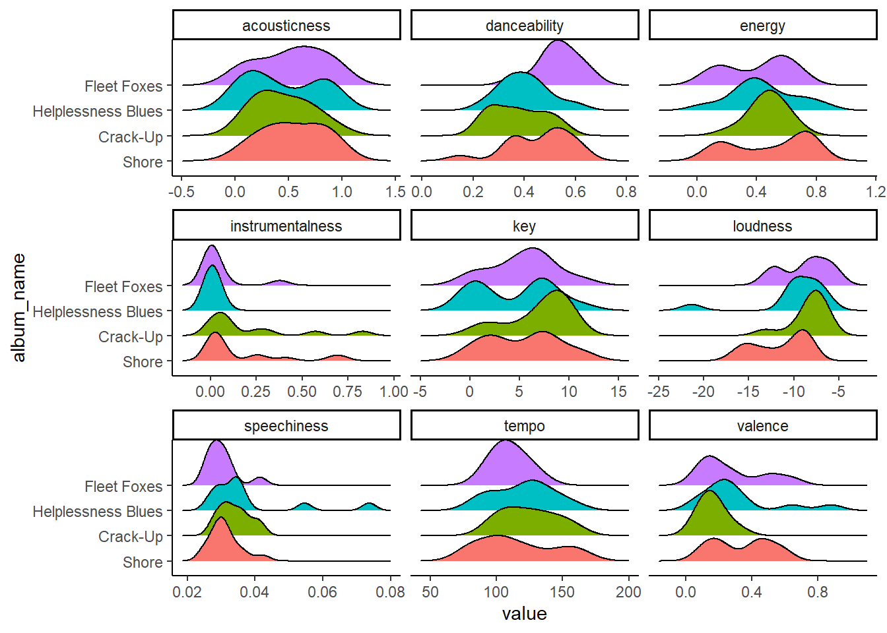
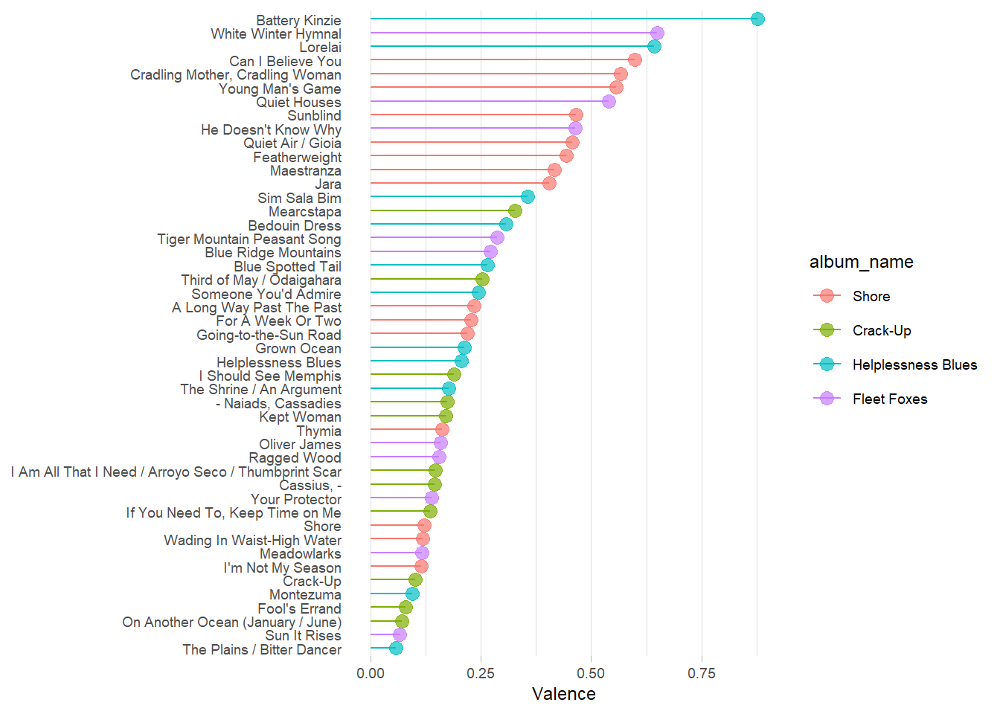
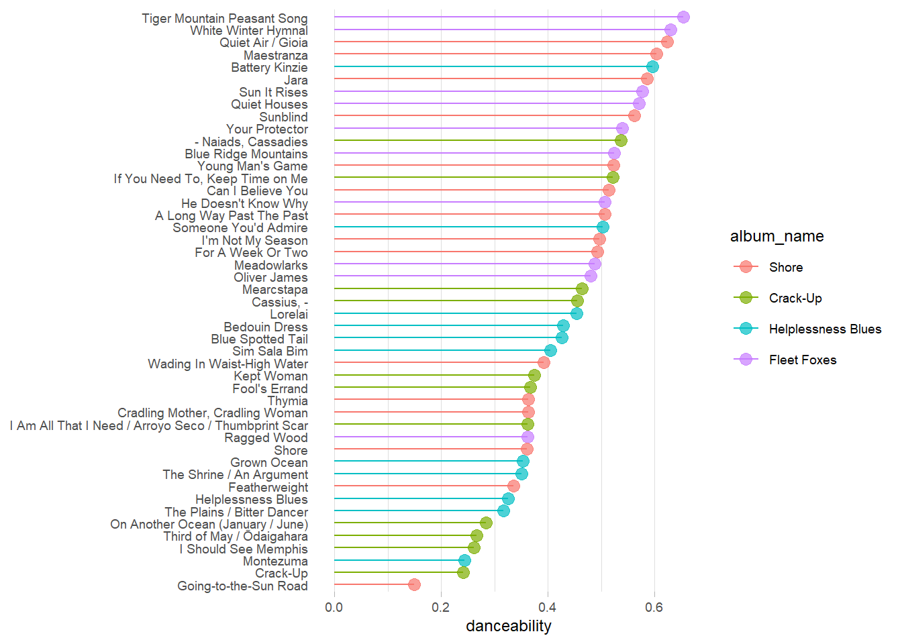
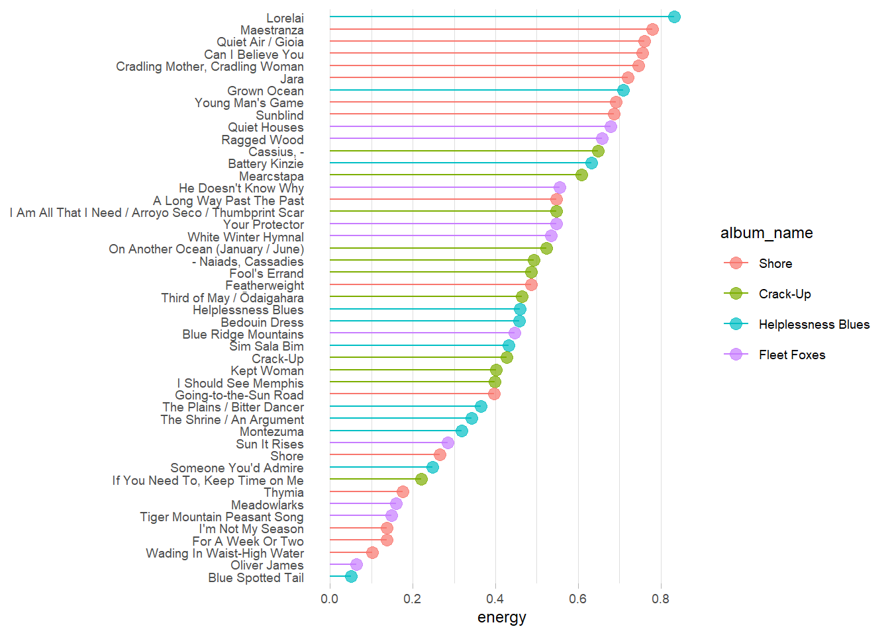
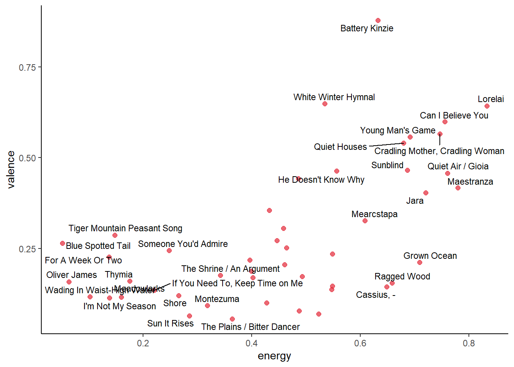
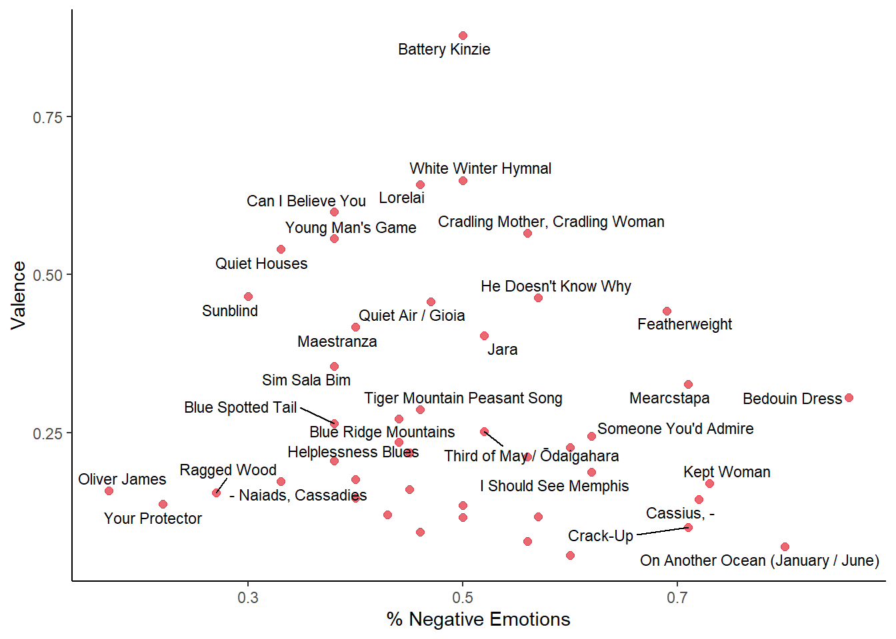
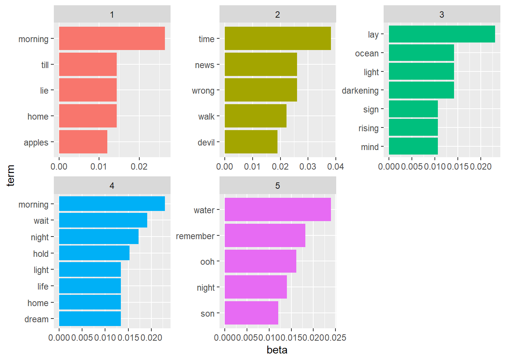

This project is designed to compare Fleet Foxes’ four albums. It uses the spotifyr and geniusr packages to download song features and lyrics, allowing for text analysis of lyrics for each track. I’ll use various NLP tools, including sentiment analysis and LDA to provide unsupervised classification of tracks on each album.
library(tidyverse)
library(tidytext)
library(spotifyr)
library(geniusr)
library(httr)
library(jsonlite)
library(tidytext)
library(topicmodels)
library(tidymodels)
library(ggridges)
library(kableExtra)
library(textrecipes)Here we pull data from Spotify, keeping just the four main albums in Spotify: Fleet Foxes, Helplessness Blues, Crack-Up, and Shore, which was just released in October 2020.
## Spotify data
ff <- get_artist_audio_features("fleet foxes") %>%
select(1:3, track_name, 6, 9:20, 32, 36:39) %>%
relocate(artist_name, track_name, album_name)
ff2 <- ff %>%
filter(!album_id %in% c("2m7zr13OtqMWyPkO32WRo0", "5GRnydamKvIeG46dycID6v",
"6XzZ5pg9buAKNYg293KOQ8", "62miIQWlOO88YmupzmUNGJ",
"6ou9sQOsIY5xIIX417L3ud", "7LKzVm90JnhNMPF6qX21fS",
"7D0rCfJjFj9x0bdgRKtvzb")) %>%
mutate(track_name_clean = str_to_lower(track_name),
track_name_clean = str_replace_all(track_name_clean, "[:punct:]", " "))The code chunk below uses the geniusr package to pull lyrics.
## Genus lyrics data
ff_id <- search_artist("Fleet Foxes") %>%
pull(artist_id)
ff_songs <- get_artist_songs_df(ff_id)
ff_lyrics <- map(ff_songs$song_id, get_lyrics_id) %>%
bind_rows()
ff_lyrics2 <- ff_lyrics %>%
select(song_name, line, song_id) %>%
group_by(song_id, song_name) %>%
dplyr::summarize(line = paste0(line, collapse = " ")) %>%
filter(!str_detect(song_name, "Booklet")) %>%
mutate(song_name_clean = str_to_lower(song_name),
song_name_clean = str_replace_all(song_name_clean, "[:punct:]", " "))## `summarise()` regrouping output by 'song_id' (override with `.groups` argument)## Alternative way to get lyrics using the genius package
# albums <- c("Shore", "Crack Up", "Helplessness Blues", "Fleet Foxes")
# ff_lyrics <- map(albums, ~genius_album(artist = "Fleet Foxes", album = .)) %>%
# bind_rows()Finally, we can combine the song features and lyrics into a single data frame.
## Combine lyrics and song features
album_order <- c("Shore", "Crack-Up", "Helplessness Blues", "Fleet Foxes")
ff_combined <- ff2 %>%
left_join(ff_lyrics2, by = c("track_name_clean" = "song_name_clean")) %>%
select(-track_name_clean, song_name) %>%
filter(!is.na(line)) %>%
mutate(album_name = factor(album_name, levels = album_order)) First, we’ll compare the how the various song features tracked by Spotify (danceability, energy, etc.) change across the four albums. My overall expectation is that the Fleet Foxes and Helplessness Blues albums are fairly similar, Crack-Up has a much more dissonance and lower valence, and Shore has higher valence.
ff_combined %>%
pivot_longer(danceability:tempo) %>%
filter(!name %in% c("mode", "liveness")) %>%
ggplot(aes(x = value, y = album_name, fill = album_name)) +
geom_density_ridges() +
facet_wrap(~ name, scales = "free_x") +
theme_classic() +
theme(legend.position = "none")
# This produces multiple larger charts (one for each track feature) instead
vars <- ff_combined %>%
select(danceability:tempo) %>%
colnames()
map(vars, ~ ff_combined %>%
mutate(album_name = factor(album_name, levels = album_order)) %>%
ggplot(aes(x = .x, y = album_name, fill = album_name)) +
geom_density_ridges() +
theme_classic() +
theme(legend.position = "none") +
labs(x = NULL, y = "Album"))Some overall takeaways:
The code below analyzes individual tracks by various track features.
ff_combined %>%
arrange(desc(valence)) %>%
#slice_head(n = 20) %>%
mutate(track_name = factor(track_name, levels = track_name),
track_name = fct_rev(track_name)) %>%
ggplot(aes(y = track_name, x = valence, color = album_name)) +
geom_segment(aes(x = 0, xend = valence, y = track_name, yend = track_name)) +
geom_point(size = 3, alpha = 0.7) +
theme_light() +
labs(y = NULL, x = "Valence") +
theme(panel.grid.major.y = element_blank(),
panel.border = element_blank(),
axis.ticks.y = element_blank(),
text = element_text(size=9))
ff_combined %>%
arrange(desc(danceability)) %>%
#slice_head(n = 20) %>%
mutate(track_name = factor(track_name, levels = track_name),
track_name = fct_rev(track_name)) %>%
ggplot(aes(y = track_name, x = danceability, color = album_name)) +
geom_segment(aes(x = 0, xend = danceability, y = track_name, yend = track_name)) +
geom_point(size = 3, alpha = 0.7) +
theme_light() +
labs(y = NULL, x = "danceability") +
theme(panel.grid.major.y = element_blank(),
panel.border = element_blank(),
axis.ticks.y = element_blank(),
text = element_text(size=9))
ff_combined %>%
arrange(desc(energy)) %>%
#slice_head(n = 20) %>%
mutate(track_name = factor(track_name, levels = track_name),
track_name = fct_rev(track_name)) %>%
ggplot(aes(y = track_name, x = energy, color = album_name)) +
geom_segment(aes(x = 0, xend = energy, y = track_name, yend = track_name)) +
geom_point(size = 3, alpha = 0.7) +
theme_light() +
labs(y = NULL, x = "energy") +
theme(panel.grid.major.y = element_blank(),
panel.border = element_blank(),
axis.ticks.y = element_blank(),
text = element_text(size=9))
ff_combined %>%
ggplot(aes(x = energy, y = valence, label = track_name)) +
geom_point(color = "#E32636", alpha = 0.7, size = 2) +
ggrepel::geom_text_repel(size = 3, data = subset(ff_combined, energy > .55 | energy < .38 | valence > .5)) +
theme_classic() 
Next we can bring in some sentiments from the nrc data to compare whether valence aligns with positive vs. negative lyrics on individual tracks. Do some songs sound happy but have negative lyrics, or vice versa?
ff_sentiment <- ff_combined %>%
unnest_tokens(word, line) %>%
select(album_name, track_name, word) %>%
anti_join(stop_words) %>%
inner_join(get_sentiments("nrc")) %>%
distinct(word, track_name, .keep_all = TRUE) %>%
mutate(sentiment = if_else(sentiment %in% c("anger", "fear", "negative",
"disgust", "sadness"),
"negative", "positive")) %>%
count(track_name, sentiment) %>%
group_by(track_name) %>%
mutate(prop = round(n/sum(n), 2)) %>%
filter(sentiment == "negative") %>%
left_join(ff_combined %>% select(track_name, valence))## Joining, by = "word"
## Joining, by = "word"## Joining, by = "track_name"ff_sentiment %>%
ggplot(aes(prop, valence, label = track_name)) +
geom_point(color = "#E32636", alpha = 0.7, size = 2) +
ggrepel::geom_text_repel(size = 3, data = subset(ff_sentiment, valence > .25 | prop > .6 | prop < .4)) +
theme_classic() +
labs(x = "% Negative Emotions", y = "Valence")
Some of the sentiment analysis is tough because there aren’t a ton of words per song that have a sentiment in the nrc lexicon. However, it is interesting that many of the top valence songs, like Battery Kinzie, White Winter Hymnal, Lorelai, and Can I Believe you all have 50% or less positive emotions. That’s not surprising for Can I Believe You, which sounds upbeat but is about relationship trust issues.
Finally, we can do some LDA for unsupervised classification of songs into 5 topics.
ff_dtm <- ff_combined %>%
rename(text = line) %>%
unnest_tokens(word, text) %>%
anti_join(stop_words, by = "word") %>%
count(track_name, word, sort = TRUE) %>%
cast_dtm(track_name, word, n)
ff_lda <- LDA(ff_dtm, k = 5, control = list(seed = 123))
ff_topics <- ff_lda %>%
tidy(matrix = "beta")
ff_top_terms <- ff_topics %>%
group_by(topic) %>%
top_n(5, abs(beta)) %>%
ungroup() %>%
arrange(topic, desc(beta))
ff_top_terms %>%
mutate(term = reorder_within(term, beta, topic)) %>%
ggplot(aes(beta, term, fill = factor(topic))) +
geom_col(show.legend = FALSE) +
facet_wrap(~ topic, scales = "free") +
scale_y_reordered()
So, our LDA algorithm found the following topics:
Seeing these 5 topics, it’s clear that nature, memory, light and darkness all factor heavily across all Fleet Foxes lyrics.
Finally, we can classify each song into one of the above topics.
ff_lda %>%
tidy(matrix = "gamma") %>%
group_by(document) %>%
top_n(n = 1, wt = gamma) %>%
arrange(topic) %>%
kbl(booktabs = TRUE) %>%
kable_styling(bootstrap_options = "striped") %>%
kable_paper()| document | topic | gamma |
|---|---|---|
| The Shrine / An Argument | 1 | 0.9993863 |
| Helplessness Blues | 1 | 0.9989583 |
| Ragged Wood | 1 | 0.9985740 |
| Sunblind | 1 | 0.9994617 |
| Blue Ridge Mountains | 1 | 0.9991584 |
| Lorelai | 2 | 0.9984385 |
| If You Need To, Keep Time on Me | 2 | 0.9967279 |
| Quiet Air / Gioia | 2 | 0.9993806 |
| Oliver James | 2 | 0.9990884 |
| White Winter Hymnal | 2 | 0.9988488 |
| Meadowlarks | 2 | 0.9981269 |
| Can I Believe You | 2 | 0.9981789 |
| Sim Sala Bim | 2 | 0.9986334 |
| Quiet Houses | 3 | 0.9980137 |
| On Another Ocean (January / June) | 3 | 0.9986334 |
| Fool’s Errand | 3 | 0.9984748 |
| Featherweight | 3 | 0.9988283 |
| Jara | 3 | 0.9991584 |
| Kept Woman | 3 | 0.9988070 |
| Crack-Up | 3 | 0.9984005 |
| Cradling Mother, Cradling Woman | 3 | 0.9987383 |
| He Doesn’t Know Why | 3 | 0.9984385 |
| I’m Not My Season | 3 | 0.9988283 |
| Montezuma | 3 | 0.9981269 |
| Someone You’d Admire | 3 | 0.9972714 |
| Your Protector | 4 | 0.9986334 |
| Battery Kinzie | 4 | 0.9988687 |
| Grown Ocean | 4 | 0.9989583 |
| Blue Spotted Tail | 4 | 0.9984748 |
| Third of May / Odaigahara | 4 | 0.9993434 |
| I Am All That I Need / Arroyo Seco / Thumbprint Scar | 4 | 0.9988878 |
| Sun It Rises | 4 | 0.9975736 |
| The Plains / Bitter Dancer | 4 | 0.9981269 |
| Tiger Mountain Peasant Song | 4 | 0.9984005 |
| Young Man’s Game | 4 | 0.9986334 |
| Cassius, - | 5 | 0.9991584 |
| Shore | 5 | 0.9987136 |
| Bedouin Dress | 5 | 0.9984005 |
| Maestranza | 5 | 0.8463228 |
| A Long Way Past The Past | 5 | 0.9986879 |
| Mearcstapa | 5 | 0.9973802 |
| Wading In Waist-High Water | 5 | 0.9978859 |
|
5 | 0.9972714 |
| For A Week Or Two | 5 | 0.9981269 |
| Going-to-the-Sun Road | 5 | 0.9989583 |
| Thymia | 5 | 0.9980720 |
| I Should See Memphis | 5 | 0.9973802 |